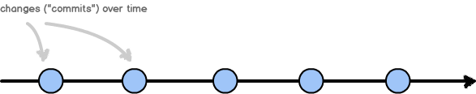
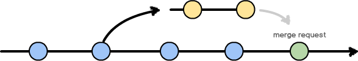

Centralized

Forking

Project forks give full permissions to developers so they can do work. New work is added to the main project through a request to upstream project.
- Pro: Forces a review process.
- Pro: "Modern" way of doing patches.
- Pro: Encourages experimentation (dev controls their own project clone)
- Example: joind.in
HINT: There is no git command called a fork. This matches up to
the command clone.
Variant: Patching
Everyone has read access. Very few have write access. Suggested changes are presented as a patch file for review.
- Pro: Forces a review process.
- Con: Patches need to be rerolled to stay up-to-date. Example: Drupal
Branching

- Pro: Ensures clean/working master (good for CI)
- Pro: Encourages experimentation (cheap to branch)
- Pro: Reduces overhead of forking workflow
- Con: Encourages code review (does not require)
- Example: your internal project (probably)